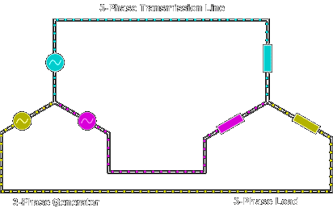
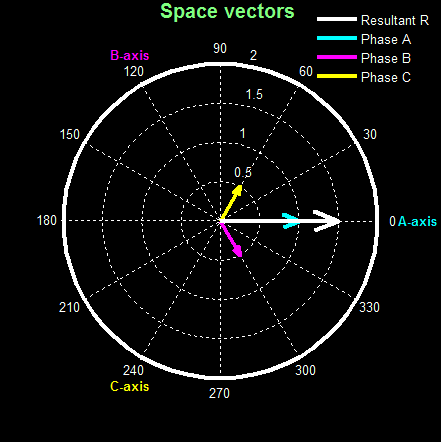

class: nord-dark layout: true --- class: center, middle # WHY DO WE USE 3-PHASE POWER? ## Ozan Keysan [keysan.me](http://keysan.me) --- ## 3-Phase Power is Everywhere <img src="https://cdn-images-1.medium.com/max/2000/1*6lCTsj6fN1y2nP_Y44Icqw.jpeg" alt="Drawing" style="width: 850px;"/> --- # WHY 3 PHASE? (but not 2 or 5?) --  --- # WHY 3 PHASE? (but not 2 or 5?)  --- ## How much wire is required to transmit same power? --- # WHY 3-PHASE? -- - ## 3, 4, 5... phase systems use less wire than 2-phase systems -- - ## 3 is the smallest number to have this property (less installation cost compared to 4, 5... phase systems) -- - ## It is possible to generate a rotating field --- # Rotating MMF with a 3-phase system <img src="./images/rotating_mmf.gif" alt="Drawing" style="width: 750px;"/> --- # Rotating MMF (Phasor Representation)  --- # Rotating MMF (Phasor Representation) <img src="./images/rotating_combined.gif" alt="Drawing" style="width: 800px;"/> ---